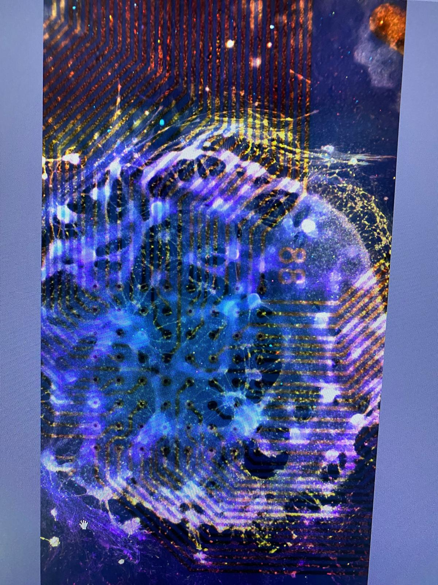

Olfactory neural cultures & odorant responses
German Center for Neurodegenerative Diseases (DZNE), Dresden
Can the electrical activity of olfactory neural cultures reveal reproducible responses to different odorants? My internship explored this question using olfactory bulb and olfactory epithelium cultures, co-culture preparations, and extracellular recordings on microelectrode arrays.
01 / Experimental model
Olfactory bulb and epithelium
I worked with OB and OE cultures and co-cultures, including different cell proportions. Preparation, maintenance, media changes and microscopy were part of the experimental workflow.
Research rationale
The broader goal was to investigate whether odorant-dependent electrophysiological signatures could support biological olfactory sensing, potentially relevant to neurodegenerative disease research.
02 / Stimulation & recordings
MEA electrophysiology
Extracellular neural activity was recorded using Axion BioSystems MEA equipment, with spontaneous activity observed before chemical stimulation.
Odorant exposure
Eugenol and isoamyl acetate were applied to examine changes in spiking and bursting. Different culture configurations and stimulation conditions were compared.
03 / Data analysis
Electrophysiological features
I evaluated mean firing rate (MFR), mean burst rate (MBR), spike counts, inter-spike intervals (ISI), inter-burst intervals (IBI), and other burst-related measures.
Interpretation
Recordings provided a way to compare baseline and stimulation-associated network activity, while accounting for substantial variability between preparations.
04 / Findings & limitations
What the experiments showed
Neural activity and experimental responses could be recorded across the preparations. However, variability prevented a consistent, reproducible odorant-specific electrophysiological fingerprint from being established.
What the work was not
These experiments used neural cultures and co-cultures on MEAs; they did not establish a validated diagnostic sensor or a completed organ-on-chip device.
05 / Experimental media
Confocal microscopy image from the olfactory neural culture experiments.
